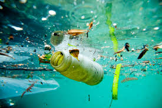

Water pollution today is a major issue, as clean drinking water is being polluted
by a wide variety of items and components reducing the amount of usable water.
Water pollution is caused by chemical waste dumping, oil leaks, plastics, industrial
waste, sewage and waste water, burning of fossil fules,chemical fertilizers
and pesticides, radioactive waste and more.
A few things we can do to reduce
water pollution are - Reduce usage of Plastic items,dispose of trash/recycle
unwanted items, properly, reduce usage of harsh chemicals while
cleaning and more.Water pollution not only harms us humans but also the
thousands of sea creatures that are peacefully living in their habitat.
Over 90% of the worlds water bodies have not been explored
and if we lose many of these species due to our
actions we will lose a lot of information that might help us
progress in studying these wonderful creatures.
